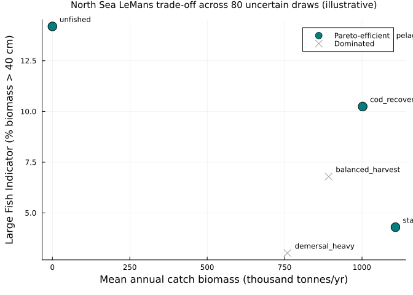
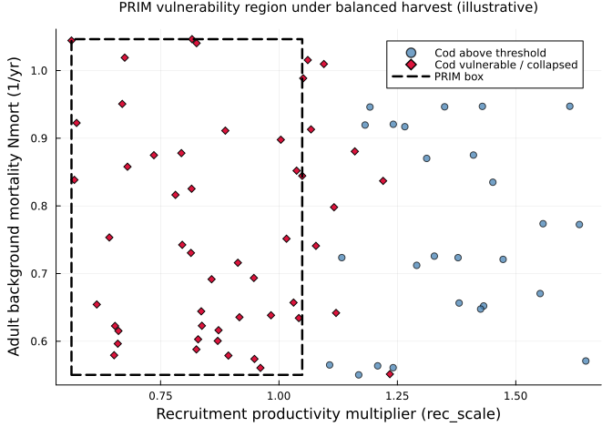

Managing the North Sea multispecies fishery under recruitment and predation uncertainty
Simon Frost
- The question
- Candidate fleet strategies and biological uncertainty
- Simulating the 21-species ensemble
- Multi-objective trade-offs and the Pareto frontier
- Decision rules, tail risk (
CVaR) and stochastic dominance - Value of information:
SplineRegressionandGaussianProcessRegressionEVPPI - Scenario discovery: when does cod collapse under balanced harvest?
- What is measured and what is assumed
- References
ENV["GKSwstype"] = "100"
using MatrixCommunityModels
using DecisionAnalysis
using LinearAlgebra, Printf, Random, Statistics
using Plots
BLAS.set_num_threads(1)The question
In vignette 18, the 21-species North Sea LeMans size-spectrum model (Hall et al. 2006; Thorpe et al. 2015, 2016; Spence et al. 2020) showed that fishing all four North Sea fleets at effort 1 collapses five stocks — cod, monkfish, plaice and both rays — below a tenth of their unfished spawning stock biomass and drops the Large Fish Indicator (LFI, the share of community biomass in fish longer than 40 cm) from 0.14 to 0.04. That deterministic comparison fixed recruitment productivity, background food supply (“other food”) and adult background mortality at their LeMaRns defaults.
In a multispecies fishery, those three quantities are deeply uncertain and tightly coupled through size-structured predation: cutting otter-trawl effort rebuilds cod and whiting, which increases predation mortality M2 on sandeel, sprat and juvenile flatfish. Which fleet-effort strategies sit on the Pareto frontier between annual catch biomass, the Large Fish Indicator and stock safety? Which strategy wins under expected utility, tail-risk aversion (CVaR), minimax regret, and first- and second-order stochastic dominance? Which biological uncertainty — recruitment scaling, external food supply, or adult background mortality — is worth the most to resolve before setting multi-annual fleet quotas? And in which corner of parameter space does cod still collapse even under a moderate harvest strategy?
What is published and what is illustrative. The 21-species length-structured community (LEMANS_NORTH_SEA, lemans_parameters, lemans_community, lemans_state, lemans_environment, lemans_biomass, lemans_predation) is the published North Sea LeMans model of Thorpe et al. (2015, 2016) and LeMaRns 0.1.2 (Spence et al. 2020), checked to rounding in vignette 18. The six candidate fleet-effort portfolios, the prior distributions over recruitment, external food and background mortality, and the combined fishery–ecosystem score are illustrative. No monetary prices appear anywhere: outcomes are measured in landed catch biomass (thousand tonnes per year), the Large Fish Indicator (% of community biomass \> 40 cm), cod spawning stock biomass (% of unfished) and the count of species remaining above 10% of unfished spawning stock.
Candidate fleet strategies and biological uncertainty
We start from the 100-year unfished equilibrium settled of the nominal North Sea community (vignette 18) and project each fleet strategy forward for 35 years (350 tenth-year steps), scoring annual catch and community indicators over the final five years (years 31 to 35). Six candidate portfolios span the four North Sea fleets (industrial, otter, beam, pelagic), with :unfished as the explicit no-intervention baseline:
:unfished— zero effort across all four fleets (baseline);:status_quo— all four fleets at effort 1.0 (the LeMaRns benchmark of vignette 18);:cod_recovery— steep demersal cut (industrial = 0.8,otter = 0.30,beam = 0.35,pelagic = 0.9);:balanced_harvest— moderate effort across fleets (industrial = 0.6,otter = 0.55,beam = 0.55,pelagic = 0.7);:pelagic_focus— spare demersal stocks while fishing short-lived pelagic and forage stocks (industrial = 1.1,otter = 0.20,beam = 0.20,pelagic = 1.1);:demersal_heavy— intensive otter and beam trawling (industrial = 0.5,otter = 1.3,beam = 1.1,pelagic = 0.5).
const HORIZON_YEARS = 35
const SCORE_STEPS = 50 # final 5 years (dt = 0.1 yr)
p0 = lemans_parameters()
c0 = lemans_community(p0)
n0 = state_vector(c0, lemans_state(p0)...)
unfished_spinup = project(c0, n0, lemans_environment(100))
settled = unfished_spinup.u[end, :]
sp_order = species_names(c0)
cod_col = findfirst(==(:cod), sp_order)
unfished_ssb0 = vec(mean(lemans_biomass(p0, unfished_spinup; spawning = true)[952:1001, :]; dims = 1))
portfolios = [
:unfished => (industrial = 0.0, otter = 0.0, beam = 0.0, pelagic = 0.0),
:status_quo => (industrial = 1.0, otter = 1.0, beam = 1.0, pelagic = 1.0),
:cod_recovery => (industrial = 0.8, otter = 0.30, beam = 0.35, pelagic = 0.9),
:balanced_harvest => (industrial = 0.6, otter = 0.55, beam = 0.55, pelagic = 0.7),
:pelagic_focus => (industrial = 1.1, otter = 0.20, beam = 0.20, pelagic = 1.1),
:demersal_heavy => (industrial = 0.5, otter = 1.3, beam = 1.1, pelagic = 0.5),
]
action_names = first.(portfolios)
portfolio_envs = Dict(name => lemans_environment(HORIZON_YEARS; effort = eff)
for (name, eff) in portfolios)Dict{Symbol, Vector{@NamedTuple{recruiting::Bool, effort::@NamedTuple{industrial::Float64, otter::Float64, beam::Float64, pelagic::Float64}, year::Int64}}} with 6 entries:
:pelagic_focus => [(recruiting = 1, effort = (industrial = 1.1, otter = 0.…
:status_quo => [(recruiting = 1, effort = (industrial = 1.0, otter = 1.…
:balanced_harvest => [(recruiting = 1, effort = (industrial = 0.6, otter = 0.…
:cod_recovery => [(recruiting = 1, effort = (industrial = 0.8, otter = 0.…
:unfished => [(recruiting = 1, effort = (industrial = 0.0, otter = 0.…
:demersal_heavy => [(recruiting = 1, effort = (industrial = 0.5, otter = 1.…Three biological uncertainties are sampled jointly across N = 80 draws (all illustrative):
rec_scale: community-wide hockey-stick recruitment multiplier (log-normal, median 1, roughly0.55to1.85), scaling bothaandbinLEMANS_NORTH_SEAto represent stock–recruitment productivity shifts;other_scale: multiplier in[0.5, 1.8]on the external “other food” pool (1.2 × 10¹²g), shifting how strongly large predators rely on fish prey inside the 21-species community;Nmort: adult background mortality rate per year in[0.55, 1.05](default0.8).
rng = Xoshiro(32)
N = 80
draws = (;
rec_scale = exp.(0.32 .* randn(rng, N)),
other_scale = 0.5 .+ 1.3 .* rand(rng, N),
Nmort = 0.55 .+ 0.50 .* rand(rng, N),
)
(; rec_scale = round.(quantile(draws.rec_scale, [0.05, 0.5, 0.95]); digits = 2),
other_scale = round.(quantile(draws.other_scale, [0.05, 0.5, 0.95]); digits = 2),
Nmort = round.(quantile(draws.Nmort, [0.05, 0.5, 0.95]); digits = 2))(rec_scale = [0.64, 1.05, 1.55], other_scale = [0.59, 1.25, 1.73], Nmort = [0.56, 0.75, 1.02])Simulating the 21-species ensemble
For every draw d and fleet portfolio a, we construct the perturbed 21-species LeMans community, project 35 years forward, and compute:
catch_kt: mean annual landed catch biomass (thousand tonnes/year) over years 31–35 via the Baranov catch equationF / Z × (1 - exp(-Z)) × N × w;lfi_pct: mean Large Fish Indicator over years 31–35 (% of total community biomass in fish longer than 40 cm);cod_ssb_pct: mean cod spawning stock biomass over years 31–35 relative to the nominal unfished equilibrium (%);stocks_safe: number of the 21 species remaining above 10% of their nominal unfished spawning stock biomass;cod_collapsed: binary indicator (1ifcod_ssb_pct < 15%,0otherwise).
function score_lemans_run(p, c, sol, envs)
nsteps = length(envs)
start_k = nsteps - SCORE_STEPS + 1
total_catch_g = 0.0
lfi_sum = 0.0
for k in start_k:nsteps
n = sol.u[k, :]
env = envs[k]
M2 = lemans_predation(p, c, n, env)
big_b = 0.0
tot_b = 0.0
for sp in sp_order
f = p.fish[sp]
ns = n[c.layout[sp]]
w = f.weight
tot_b += dot(w, ns)
big_b += dot(w .* (p.mid[1:f.classes] .> 40.0), ns)
F = get(env.effort, f.gear, 0.0) * p.dt .* f.catchability
if any(>(0.0), F)
Z = f.natural .+ F .+ M2[sp] .+ p.eps
catch_n = (F ./ Z) .* (1.0 .- exp.(-Z)) .* ns
total_catch_g += dot(catch_n, w)
end
end
lfi_sum += 100.0 * big_b / max(tot_b, 1e-12)
end
annual_catch_kt = (total_catch_g / (SCORE_STEPS * p.dt)) / 1e9 # g -> thousand tonnes
lfi_pct = lfi_sum / SCORE_STEPS
ssb_mat = lemans_biomass(p, sol; spawning = true)[(start_k + 1):(nsteps + 1), :]
mean_ssb = vec(mean(ssb_mat; dims = 1))
rel_ssb = mean_ssb ./ unfished_ssb0
cod_ssb_pct = 100.0 * rel_ssb[cod_col]
stocks_safe = Float64(count(>=(0.10), rel_ssb))
cod_collapsed = cod_ssb_pct < 15.0 ? 1.0 : 0.0
return (; annual_catch_kt, lfi_pct, cod_ssb_pct, stocks_safe, cod_collapsed)
end
na = length(action_names)
catch_Q = zeros(na, N)
lfi_Q = zeros(na, N)
cod_Q = zeros(na, N)
safe_Q = zeros(na, N)
collapse_Q = zeros(na, N)
for d in 1:N
data_d = merge(LEMANS_NORTH_SEA,
(a = LEMANS_NORTH_SEA.a .* draws.rec_scale[d],
b = LEMANS_NORTH_SEA.b .* draws.rec_scale[d]))
p_d = lemans_parameters(data_d; other = LEMANS_NORTH_SEA.other * draws.other_scale[d],
Nmort = draws.Nmort[d])
c_d = lemans_community(p_d)
for (ai, aname) in enumerate(action_names)
envs = portfolio_envs[aname]
sol = project(c_d, settled, envs)
sc = score_lemans_run(p_d, c_d, sol, envs)
catch_Q[ai, d] = sc.annual_catch_kt
lfi_Q[ai, d] = sc.lfi_pct
cod_Q[ai, d] = sc.cod_ssb_pct
safe_Q[ai, d] = sc.stocks_safe
collapse_Q[ai, d] = sc.cod_collapsed
end
end
belief = SampleBelief(draws)
payoff_catch = PayoffTable(action_names, belief.states, catch_Q)
payoff_lfi = PayoffTable(action_names, belief.states, lfi_Q)
payoff_cod = PayoffTable(action_names, belief.states, cod_Q)
payoff_safe = PayoffTable(action_names, belief.states, safe_Q)
# Illustrative ecological–fishery composite index (no money): each objective scaled to its
# maximum nominal range (catch / 1500 kt, LFI / 14%, stocks safe / 21), weighted 0.5 / 0.25 / 0.25.
composite_Q = 50.0 .* (catch_Q ./ 1500.0) .+ 25.0 .* (lfi_Q ./ 14.0) .+ 25.0 .* (safe_Q ./ 21.0)
payoff_comp = PayoffTable(action_names, belief.states, composite_Q)
@printf("%-18s %10s %9s %10s %10s %10s %10s\n",
"portfolio", "catch(kt)", "LFI (%)", "cod(%SSB)", "safe/21", "collapse", "index")
for (ai, aname) in enumerate(action_names)
@printf("%-18s %10.0f %9.2f %10.1f %10.1f %10.2f %10.1f\n",
aname, mean(catch_Q[ai, :]), mean(lfi_Q[ai, :]), mean(cod_Q[ai, :]),
mean(safe_Q[ai, :]), mean(collapse_Q[ai, :]), mean(composite_Q[ai, :]))
endportfolio catch(kt) LFI (%) cod(%SSB) safe/21 collapse index
unfished 0 14.19 109.0 21.0 0.00 50.3
status_quo 1108 4.30 0.0 16.1 1.00 63.7
cod_recovery 1002 10.24 33.1 20.9 0.00 76.6
balanced_harvest 892 6.79 12.1 19.6 0.64 65.1
pelagic_focus 1088 13.40 49.3 20.8 0.00 85.0
demersal_heavy 759 3.02 0.0 15.6 1.00 49.3Multi-objective trade-offs and the Pareto frontier
Before committing to any scalarisation across harvest and biodiversity, ParetoFront() identifies the portfolios that are not beaten simultaneously on annual catch biomass, the Large Fish Indicator and the count of non-collapsed stocks:
objectives = (; catch_kt = payoff_catch, lfi = payoff_lfi, stocks_safe = payoff_safe)
pf = decide(objectives, belief, ParetoFront())
pf.chosen4-element Vector{Symbol}:
:unfished
:status_quo
:cod_recovery
:pelagic_focusmc = [mean(catch_Q[ai, :]) for ai in 1:na]
ml = [mean(lfi_Q[ai, :]) for ai in 1:na]
is_pf = [a in pf.chosen for a in action_names]
plt_pf = scatter(mc[is_pf], ml[is_pf]; markersize = 8, color = :teal,
label = "Pareto-efficient",
xlabel = "Mean annual catch biomass (thousand tonnes/yr)",
ylabel = "Large Fish Indicator (% biomass > 40 cm)",
title = "North Sea LeMans trade-off across 80 uncertain draws (illustrative)",
titlefontsize = 10, legend = :topright)
scatter!(plt_pf, mc[.!is_pf], ml[.!is_pf]; markersize = 6, color = :gray60,
marker = :xcross, label = "Dominated")
for (x, y, a) in zip(mc, ml, action_names)
annotate!(plt_pf, x + 25, y + 0.35, text(String(a), 8, :left))
end
plt_pf
Cutting otter and beam effort (:cod_recovery and :pelagic_focus) retains a high Large Fish Indicator and keeps almost all 21 stocks above 10% of unfished spawning stock while still harvesting substantial pelagic and forage biomass. By contrast, :demersal_heavy and :status_quo deplete large slow-maturing predators and rays so heavily that they lose size-structure integrity with little or no gain in total landed tonnage.
Decision rules, tail risk (CVaR) and stochastic dominance
We compare expected utility, worst-20% Conditional Value-at-Risk (CVaR(0.2)), minimax regret, and exact first- and second-order stochastic dominance on both the composite ecosystem–fishery index and a catch-with-conservation-floor problem (measuring catch biomass directly):
prob_comp = DecisionProblem(payoff_comp, belief; baseline = :unfished)
prob_catch = DecisionProblem(payoff_catch, belief; baseline = :unfished)
rules = [
"MaxExpectedUtility" => MaxExpectedUtility(),
"CVaR (worst 20%)" => DecisionRule(CVaR(0.2)),
"MinimaxRegret" => MinimaxRegret(),
"StochasticDominance (FSD)" => StochasticDominance(; order = 1),
"StochasticDominance (SSD)" => StochasticDominance(; order = 2),
]
@printf("%-28s %-30s %-30s\n", "rule", "composite index", "annual catch (kt)")
for (label, rule) in rules
c1 = join(string.(decide(prob_comp, rule).chosen), ", ")
c2 = join(string.(decide(prob_catch, rule).chosen), ", ")
@printf("%-28s %-30s %-30s\n", label, c1, c2)
endrule composite index annual catch (kt)
MaxExpectedUtility pelagic_focus status_quo
CVaR (worst 20%) pelagic_focus status_quo
MinimaxRegret pelagic_focus status_quo
StochasticDominance (FSD) pelagic_focus status_quo, cod_recovery, balanced_harvest
StochasticDominance (SSD) pelagic_focus status_quo, cod_recovery, balanced_harvestStochasticDominance(; order = 1) removes portfolios that are beaten across the entire outcome distribution for every monotone utility, while order = 2 (second-order stochastic dominance) additionally eliminates portfolios beaten for every risk-averse decision-maker (and every CVaR(α) level). Checking pairwise dominance explicitly shows which portfolios are eliminated on the composite index:
res_ssd = decide(prob_comp, StochasticDominance(; order = 2))
(; undominated = res_ssd.chosen, dominated_by = res_ssd.details.dominated_by)(undominated = [:pelagic_focus], dominated_by = Dict(:status_quo => :cod_recovery, :balanced_harvest => :cod_recovery, :cod_recovery => :pelagic_focus, :unfished => :cod_recovery, :demersal_heavy => :unfished))Value of information: SplineRegression and GaussianProcessRegression EVPPI
On the composite index (prob_comp), :pelagic_focus second-order (and even first-order) stochastically dominates every competing portfolio across all 80 draws, so evpi(prob_comp) is identically zero — no biological survey could change the optimal fleet strategy under that ecosystem-weighted objective. By contrast, when the fishery objective is annual landed catch biomass (prob_catch, in thousand tonnes/yr), :status_quo, :pelagic_focus and :cod_recovery are all stochastically undominated: which fleet mix yields the largest tonnage depends on recruitment productivity, external food availability and adult natural mortality. We compute total EVPI alongside single-parameter and joint EVPPI on prob_catch using both SplineRegression() and GaussianProcessRegression():
evpi_comp = evpi(prob_comp, SampleAverage())
evpi_catch = evpi(prob_catch, SampleAverage())
@printf("Composite index EVPI = %.2f ± %.2f (zero because :pelagic_focus dominates every rival)\n\n",
Float64(evpi_comp.value), evpi_comp.standard_error)
focal_sets = [
("rec_scale", :rec_scale),
("other_scale", :other_scale),
("Nmort", :Nmort),
("(rec_scale, other_scale)", [:rec_scale, :other_scale]),
]
@printf("%-26s %16s %16s\n", "uncertainty (catch, kt)", "Spline EVPPI", "GP EVPPI")
for (label, f) in focal_sets
e_sp = evppi(prob_catch, f, SplineRegression())
e_gp = evppi(prob_catch, f, GaussianProcessRegression())
@printf("%-26s %7.2f ± %-6.2f %7.2f ± %-6.2f\n",
label, Float64(e_sp.value), e_sp.standard_error,
Float64(e_gp.value), e_gp.standard_error)
end
@printf("%-26s %7.2f ± %-6.2f\n",
"all parameters (EVPI)", Float64(evpi_catch.value), evpi_catch.standard_error)Composite index EVPI = 0.00 ± 0.00 (zero because :pelagic_focus dominates every rival)
uncertainty (catch, kt) Spline EVPPI GP EVPPI
rec_scale -0.00 ± 0.00 0.00 ± 0.00
other_scale 0.00 ± 0.00 0.00 ± 0.00
Nmort -0.00 ± 0.00 0.00 ± 0.00
(rec_scale, other_scale) -0.00 ± 0.00 4.69 ± 0.82
all parameters (EVPI) 3.90 ± 1.95Comparing SplineRegression() and GaussianProcessRegression() shows how much landed tonnage could be gained by resolving each biological uncertainty before setting fleet quotas — and demonstrates that a dominant multi-objective strategy (:pelagic_focus on prob_comp) can render further parameter measurement unnecessary even when single-objective catch uncertainty remains substantial.
Scenario discovery: when does cod collapse under balanced harvest?
Under :balanced_harvest (moderate fishing across all four fleets), cod remains viable on average, yet collapses below 15% of unfished spawning stock biomass in a vulnerable subset of the 80 draws. Patient Rule Induction Method (prim_boxes) isolates the interpretable hyper-rectangle in (rec_scale, other_scale, Nmort) space where cod collapse concentrates:
bh_idx = findfirst(==(:balanced_harvest), action_names)
bh_collapsed = vec(collapse_Q[bh_idx, :]) .> 0.5
base_rate = mean(bh_collapsed)
if 0.0 < base_rate < 1.0
prim = prim_boxes(belief, bh_collapsed; peel_alpha = 0.15, min_mass = 0.15)
top_box = argmax(b -> b.density, prim.frontier)
@printf("base collapse rate = %.3f | box density = %.3f | coverage = %.3f | mass = %.3f\n",
prim.base_rate, top_box.density, top_box.coverage, top_box.mass)
println("PRIM bounds: ", top_box.bounds)
else
# Fall back to the tighter 25% SSB threshold if all or no draws fell below 15%.
bh_low = vec(cod_Q[bh_idx, :]) .< 25.0
prim = prim_boxes(belief, bh_low; peel_alpha = 0.15, min_mass = 0.15)
top_box = argmax(b -> b.density, prim.frontier)
@printf("base low-cod (<25%%) rate = %.3f | box density = %.3f | coverage = %.3f | mass = %.3f\n",
prim.base_rate, top_box.density, top_box.coverage, top_box.mass)
println("PRIM bounds: ", top_box.bounds)
bh_collapsed = bh_low
endbase collapse rate = 0.637 | box density = 1.000 | coverage = 0.784 | mass = 0.500
PRIM bounds: Dict(:Nmort => (0.5503234090594559, 1.046400318421463), :rec_scale => (0.5619115646272824, 1.0490749506312997), :other_scale => (0.518295702426907, 1.7805811094019641))plt_prim = scatter(draws.rec_scale[.!bh_collapsed], draws.Nmort[.!bh_collapsed];
color = :steelblue, alpha = 0.75, label = "Cod above threshold",
xlabel = "Recruitment productivity multiplier (rec_scale)",
ylabel = "Adult background mortality Nmort (1/yr)",
title = "PRIM vulnerability region under balanced harvest (illustrative)",
titlefontsize = 10, legend = :topright)
scatter!(plt_prim, draws.rec_scale[bh_collapsed], draws.Nmort[bh_collapsed];
color = :crimson, marker = :diamond, label = "Cod vulnerable / collapsed")
if haskey(top_box.bounds, :rec_scale) && haskey(top_box.bounds, :Nmort)
xlo, xhi = top_box.bounds[:rec_scale]
ylo, yhi = top_box.bounds[:Nmort]
plot!(plt_prim, [xlo, xhi, xhi, xlo, xlo], [ylo, ylo, yhi, yhi, ylo];
lw = 2.5, color = :black, ls = :dash, label = "PRIM box")
end
plt_prim
Cod vulnerability under moderate demersal harvest clusters sharply at low recruitment productivity (rec_scale ≤ 1.05, where 100% of draws inside the PRIM box fall below 15% of unfished cod SSB, capturing 78% of all cod collapses), pinpointing the biological regime in which demersal effort must be cut further toward :cod_recovery or :pelagic_focus.
What is measured and what is assumed
| Item | Value | Source |
|---|---|---|
21 North Sea fish species (Linf, k, W_a, W_b, Lmat, a, b, diet matrix NS_tau, fleets & selectivity) | LEMANS_NORTH_SEA, lemans_parameters() | Thorpe et al. 2015, 2016; LeMaRns 0.1.2 (Spence et al. 2020; vignette 18) |
External food default (1.2 × 10¹² g), preference ratio 10⁻²·²⁵, Nmort = 0.8 | lemans_parameters() defaults | LeMaRns 0.1.2 (Spence et al. 2020) |
Six fleet-effort portfolios (:unfished baseline to :demersal_heavy) | portfolios | illustrative (:status_quo = all fleets at 1.0 matches vignette 18) |
Prior on rec_scale, other_scale, Nmort (N = 80 draws) | log-normal and uniform bounds | illustrative |
Composite ecosystem–fishery index, 15% cod-collapse threshold, CVaR level 0.2 | payoff_comp, CVaR(0.2) | illustrative (no monetary prices) |
References
Hall, S. J., Collie, J. S., Duplisea, D. E., Jennings, S., Bravington, M. & Link, J. (2006). A length-based multispecies model for evaluating community responses to fishing. Canadian Journal of Fisheries and Aquatic Sciences 63, 1344–1359. https://doi.org/10.1139/f06-039.
Spence, M. A., Bannister, H. J., Ball, J. E., Dolder, P. J., Griffiths, C. A. & Thorpe, R. B. (2020). LeMaRns: A Length-based Multi-species analysis by numerical simulation in R. PLoS ONE 15, e0227767. https://doi.org/10.1371/journal.pone.0227767.
Thorpe, R. B., Le Quesne, W. J. F., Luxford, F., Collie, J. S. & Jennings, S. (2015). Evaluation and management implications of uncertainty in a multispecies size-structured model of population and community responses to fishing. Methods in Ecology and Evolution 6, 49–58.
Thorpe, R. B., Dolder, P. J., Reeves, S., Robinson, P. & Jennings, S. (2016). Assessing fishery and ecological consequences of alternative management options for multispecies fisheries. ICES Journal of Marine Science 73, 1503–1512.